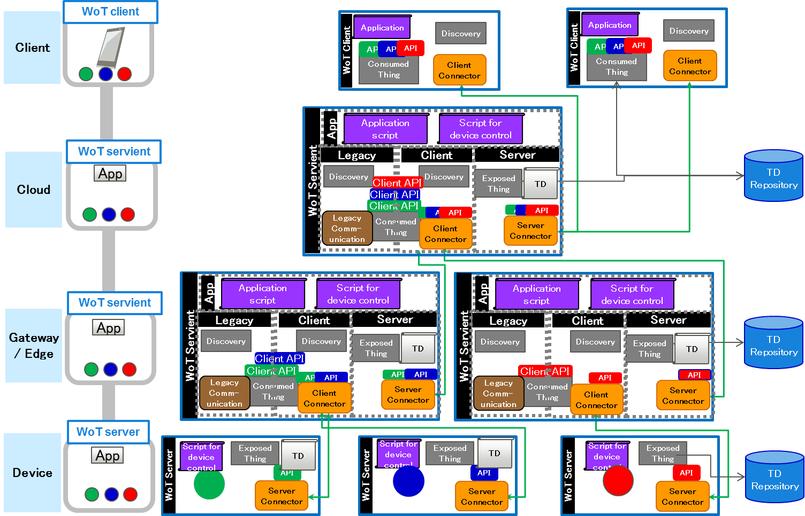

This document attempts to explain how W3C WoT(Web of Things) Scripting API works and why various decision were made the way they were.
Scripting API is a building block to provide means for discovery, provisioning and control of thing that realizing WoT Architecture. Scripting API consists of mainly two types of functions i.e. Expose Thing and Consumed Thing that are incorporated in WoT Server, WoT Client, or WoT Servient. The following sections attempt to explain how those work.
ExposedThing controls building block of WoT and manages life cycle of WoT Server API.
Given a script that has ExposedThing command tied with device access function, ExposedThing generate a WoT Thing Description (TD) and expose the server API.
The followings shows the sequence of this figure.
(1) In the development phase of WoT Server, Write a script uses ExposedThing with callback function that can accessing a thing.
(2) In the setup phase, run the script and make each object.
(3) When exposing WoTAPI, as an option, it would generate the TD and register to TD repository.
(4) Invoking expose command, expose WoTAPI based on the object made by parsing the script.
At the runtime, when a WoTAPI is called,the callback is executed to control the Thing.

Given another script that has ExposedThing command tied with device access function, ExposedThing generate a TD and expose the server API.

A script that has an unregister thing can unregister the exposed thing, the callback function, and the TD.
A script that comes with SemanticType generates a TD with semantic expression. It can be searched by accessing TD repository.

Generate a security token using e.g. IETF ACE and set permission to WoTAPI. Check the security token when WoTAPI is called.

ExposedThing can be used in any layers i.e. Client, Cloud/Server, Gateway/Edge, and Device.

ExposedThing in various layers and combinations.

ConsumedThing controls building blocks of WoT and manages life cycle of WoT Client API.
Search a device initiates a discovery and set up a ConsumedThing API to use.

The followings shows the sequence of this figure.
(a) Search a device from an application using discovery API.
(i) Discovery function accesses to the TD repository.
(ii) Download the TD.
(iii) ConsumedThing parses the TD.
(iv) ConsumedThing exposes client API.
(a') Application receive the search result.
Application access the device with method call. ConsumedThing interprit the access as WoTAPI call.

Search another device initiates a discovery and set up the Thing API to use. The sequence is the same with (a).

ConsumedThing can be used in any layers.

ConsumedThing in various layers and combinations.

A use case that uses a WoT Server and a WoT Client is shown here i.e. An electronic appliance with WoT server is controlled by a remote controller with WoT client.

The followings shows the sequence of this Figure.
(1) Script has ExposedThing call with callback function that has access method to a LED lamp.
(2) Run an script that has scripting API call.
(3) ExposeThing generate a TD.
(3') Register the TD to TD repository.
(4) ExposeThing expose server API.
(a) Application issues discovery command to search LED lamp.
(i) ConsumedThing discover command to Discovery function.
(ii) The discovery function queries TD repository to search LED lamp and receive the TD as the query result.
(iii) ConsumedThing parses the TD.
(iv) ConsumedThing expose client API.
(a') Application receive result of the discovery.
(b) Application for example issue a command for turn on the LED lamp. ConsumedThing interprit the command to WoTAPI command then access WoT server that manage the LED lamp. ExposedThing in the WoT server call callback function to turn on the LED lamp.
WoT servient consists of three part i.e. Server, Client, and Legacy communication. It deals ConsumedThing and ExposedThing methods described above. Application layer may have multiple scripts.
The followings shows the sequence of how WoT servient works for the provisioning and control of thing.
(1) A script that has ExposedThing call with callback to control a LED lamp.
(2) The script generates ExposedThing object.
(3) ExposedThing generates a TD.
(3') Register the TD to TD repository.
(4) ExposedThing expose server API.
(i) An application issues discover command to discovery function.
(ii) The discovery function queries TD repository or uses local discovery to search LED lamp and receive the TD.
(iii) ConsumedThing parses the TD.
(iv) ConsumedThing expose Client API.
(b) WoTAPI of Server receives a command for turn on. Then callback function registerd to ExposedThing is called. If the LED lamp is connected to Client, Protocol Binding interprit the command in the callback to appropriate WoTAPI command. If the LED lamp is connected to Legacy Communication, the callback function issues the legacy communication command to control the LED lamp.

The followings shows the sequence of how WoT servient works for the events handling. (c) A WoT Servient that is connected to another WoT Servient , WoT Server, or a Legacy device receive an event from them. (d) A callback function described in script handles the event. For example:
A use case that uses WoT Servients and a WoT Client is shown here. WoT servient #3 maybe on the cloud provide devices shadow and consolidate devices and expose a service. A script for Thing to Thing (T2T) service provides two functions:
Four types of scripts are placed in the application layers:

The followings shows the sequence of the fugure.
(1)
(a)
(a') T2T service discovers things and gets TDs from TD repository.
(iii)
(iv)
(2)
(3)
(3') ExposedThings register the TDs to TD repository.
(4) ExposedThing expose the server APIs.
At the runtime (b):
Control route 1: T2T control
Control route 2: Voting
WoT can provide layerd structure and following is an example. WoT Server are used in devices. WoT Servient are used in gateways / edges and on the Cloud service. WoT Client are used in clients.

It would be simpler to expose the WoT object with a constructor. Also, for ExposedThing and ConsumedThing we could provide constructors instead of factories. That would be more aligned with ECMAScript best practices (e.g. an ExposedThing object could be created for testing purposes, shaped locally, then exposed).